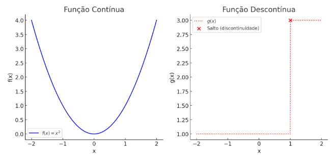

Continuidade e Limite
Conceito intuitivo de Continuidade
Uma função é contínua em um ponto x=p se seu gráfico não apresenta "saltos" nesse ponto(significa que seu gráfico pode ser desenhado sem tirar o lápis do papel). Isso significa que, ao nos aproximarmos de p, os valores da função também se aproximam de f(p). Simbolicamente, isso é escrito como: \[ \lim_{x \rightarrow p} f(x) = f(p) \]
Se houver um salto no gráfico em x=p , a função será descontínua nesse ponto.
No primeiro gráfico, vemos a função \(f(x) = x^2\), que é contínua porque seu gráfico não apresenta saltos. Conforme x se aproxima de qualquer ponto p, os valores de \(f(x)\) também se aproximam de \(f(p)\).
No segundo gráfico, temos uma função com um salto em x = 1. Para valores menores que 1, \(g(x) = 1\), e para valores maiores ou iguais a 1, \(g(x) = 3\). Isso cria uma descontinuidade porque, ao nos aproximarmos de x = 1 pela esquerda \(x\rightarrow 1^{-}\), g(x) vale 1, mas pela direita \(x\rightarrow 1^{+}\), \(g(x)\) vale 3. Como os limites não coincidem, a função é descontínua nesse ponto.
Reconhecimento de uma função contínua sem o auxílio do gráfico
Tabela de funções contínuas básicas
| Função constante: | \(f( x) =k,k\ \in ℝ\) |
| Função Potência com expoente Inteiro | \(f( x) =x^{n}\) |
| Função Potência com expoente racional: | \(\displaystyle f( x) =x^{\frac{m}{n}}\) |
| Função raiz de indice n: | \(f(x) = \sqrt[n]{x}\) |
| Função exponencial de base a: | \(f(x)= a^{x}\), \(a>0\), e \(a\ \neq 1\ \) |
| Função Logaritmica natural: | \(f( x) =\ln x,\ x >0\) |
Propriedades operatórias com funções contínuas:
- A soma de duas funções contínuas também é contínua
- Multiplicar uma função continua por um número mantém a continuidade.
- O produto de duas funções contínuas continua sendo uma função continua
- O quociente (divisão) de duas funções contínuas também é contínuo, desde que o denominador não seja zero.
- Se \(y=f(u)\) e \(u=g(x)\) forem continuas, então a função composta h(x)=f(g(x)) também será continua.
Importante:
- Só podemos analisar continuidade em pontos que pertencem ao domínio da função.
- Quando dizemos que uma função é contínua, significa que ela não tem "saltos" em nenhum ponto do seu dominio.
Exemplos:
| \(f(x)=x^3\) | \(f(x)=5\) | \(f(x)=6x^4\) | \(f(x)=x^4+3x^2-5x+9\) | \(h(x)=2x-1\) |
|---|---|---|---|---|
| É um polinômio de grau 3. Polinômios são contínuos em toda a reta real. Logo, é continua para todo \(x\ \in ℝ\). | Funções constantes não apresentam variações e são sempre continues. Logo, \(f(x)\) é contínua para todo \(x\ \in ℝ\). | É um polinômio de grau 4. Polinômios são continuos em todo \(ℝ\). Logo, \(f(x)\) é contínua para todo \(x\ \in ℝ\). | Soma e multiplicação de polinômios continuam sendo polinômios, como polinomios são continuos, essa função também é. Logo, \(f(x)\) é contínua para todo \(x\ \in ℝ\). | É um polinomio de grau 1 (função afim). Polinômios são continuos em todo \(ℝ\). |
Isso está correto?
Não! \(\frac{0}{0}\) é uma indeterminação e não um valor definido.
É necessário fazer uma fatoração, neste caso vamos utilizar soma e produto:
\[ {t^{2} -5t+6} \]
\[ \begin{array}{l} x_{1} +x_{2} =\frac{-b}{a} =\frac{-( -5)}{1} =5\\ \\ x_{1} .x_{2} =\frac{c}{a} =\frac{6}{1} =6\\ \\ 2+3=5\\ \\ 2.3=6 \end{array} \]
Depois pega o sinal de meio, ficando \((t-2).(t-3)\)
\[ \lim _{t\rightarrow 2}\frac{t^{2} -5t+6}{t-2} =\lim _{t\rightarrow 2}\frac{( t-2) .( t-3)}{t-2} =\frac{( 2-2) .( 2-3)}{2-2} =-1 \]
Limite com indeterminação
O limite de uma função f(x) quando x tende a p representa o valor que f(x) se aproxima conforme x se aproxima de p. Se a função for contínua em p, então o limite é simplesmente f(p). No entanto, em alguns casos, ao tentar calcular diretamente, encontramos indeterminações, como \(\frac{0}{0}\). Para resolver isso, utilizamos técnicas algébricas, como a fatoração, para simplificar a expressão antes de substituir o valor de x. Os produtos notáveis são expressões algébricas padronizadas, como quadrados e diferenças de termos, que facilitam a fatoração e ajudam a eliminar termos indeterminados, permitindo o correto cálculo do limite.
| Resumo de Produtos Notáveis | ||
|---|---|---|
| Quadrado da Soma | \((a+b)^2=a^2+2ab+b^2\) | |
| Quadrado da Diferença | \((a-b)^2=a^2-2ab+b^2\) | |
| Diferença de Quadrados | \((a^2-b^2)=(a-b).(a+b)\) | |
| Cubo da Soma | \((a+b)^3=a^3+3a^2b+3ab^2+b^3\) | |
| Cubo da Diferença | \((a+b)^3=a^3-3a^2b+3ab^2-b^3\) | |
| Soma e Diferença de Cubos | \( \begin{array}{l} \left( a^{3} +b^{3}\right) =( a+b)\left( a^{2} -ab+b^{2}\right)\\ \\ \left( a^{3} -b^{3}\right) =( a-b)\left( a^{2} +ab+b^{2}\right) \end{array}\) | |
Propriedades operatórias dos limites
Seja uma constante e sejam f(x) e g(x) funções tais que: \(\lim _{x\rightarrow p} f( x) =L_{1}\) e \(\displaystyle \lim _{x\rightarrow p} g( x) =L_{2}\). Nessas condições tem-se que:
| \(\lim _{x\rightarrow p} \ k.f( x) =k.\lim _{x\rightarrow p} f( x) =kL_{1}\) | O limite do produto de um número por uma função é igual ao produto do número pelo limite da função. |
| \(\lim _{x\rightarrow p}[ f( x) +g( x)] =\lim _{x\rightarrow p} \ f( x) +\ \lim _{x\rightarrow p} \ g( x) =\ L_{1} +L_{2}\) | O limite da soma é igual a soma dos limites. |
| \($\displaystyle \lim _{x\rightarrow p}[ f( x) .g( x)] =\lim _{x\rightarrow p} \ f( x) .\ \lim _{x\rightarrow p} \ g( x) =\ L_{1} .L_{2}$\) | O limite do produto é igual ao produto dos limites. |
| \(\lim _{x\rightarrow p} \ \frac{f( x)}{g( x)} =\frac{\ L_{1}}{L_{2}}\), sendo \(\displaystyle L_{2} \neq 0\) | O limite do quociente é igual ao quociente dos limites. |